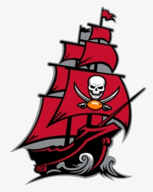

About Us
The Tampa Bay Buccaneers are a professional American football team based in Tampa, Florida. The Buccaneers compete in the National Football League (NFL) as a member club of the league's National Football Conference (NFC) South division. The club joined the NFL in 1976 as an expansion team, along with the Seattle Seahawks, and played its first season in the American Football Conference (AFC) West division. Prior to the 1977 season, Tampa Bay switched conferences and divisions with Seattle, becoming a member of the NFC Central division. During the 2002 league realignment, the Buccaneers joined three former NFC West teams to form the NFC South. The club is owned by the Glazer family and plays its home games at Raymond James Stadium in Tampa.
Radio and Television
The Buccaneers' current flagship radio stations are WXTB 97.9 FM and WDAE 620 AM. The play-by-play announcer since 1989 has been Gene Deckerhoff. Former Bucs tight end Dave Moore joined Deckerhoff as analyst for the 2007 season. T. J. Rives works as the sideline reporter. Broadcast legend and former Green Bay Packers' announcer Ray Scott was the play-by-play man for the Bucs' first two seasons in 1976 and 1977. Dick Crippen called the team's games in the first half of the 1978 season, with Jim Gallogly taking over for the second half. From 1979 to 1988 Mark Champion, who became the radio voice of the Detroit Lions (1989–2004) and then the Detroit Pistons (2001–present), held that position with the Bucs. Former Buccaneer Hardy Nickerson served as color commentator for one season in 2006, until he signed with the Bears as a linebackers coach on February 23, 2007. Nickerson had replaced Scot Brantley, who was the commentator from 1999 through 2005. Jesse Ventura, the famous professional wrestler, actor, and former governor of Minnesota, was Deckerhoff's partner on the Bucs radio broadcasts for one year, 1990, and former Buc David Logan held that position after Ventura until his death after the 1998 season. Dave Kocerek and Fran Curci were also color commentors for the Buccaneers during their earlier years.